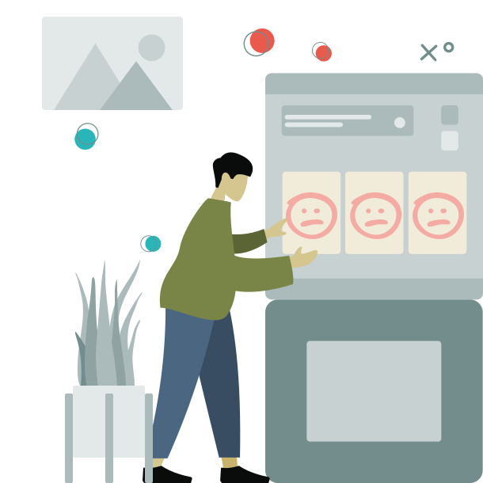

Ludopatía: el impacto en la familia y cómo romper el círculo vicioso
Detrás del juego hay una historia, una familia y la posibilidad de cambio
Explora cómo la adicción al juego afecta a las familias y cómo romper con ese patrón. El cambio comienza con el primer paso.

Ludopatía: el impacto en la familia y cómo romper el círculo vicioso
La ludopatía (adicción al juego) es una adicción silenciosa que destruye economías familiares, relaciones y la paz en el hogar. Al principio puede parecer “sólo un pasatiempo”, pero poco a poco las apuestas, el casino o las tragaperras se convierten en el centro de la vida de la persona. Y la familia, sin darse cuenta, queda atrapada en ese mismo círculo vicioso de mentiras, deudas y desesperación. En España se calcula que hay unos 400.000 ludópatas, y si sumamos el impacto en sus familias, el problema afecta en total a cerca de un millón de personas. Detrás de cada jugador compulsivo suele haber padres, parejas o hijos sufriendo las consecuencias.
Se afecta la vida familiar. Las adicciones comportamentales como el juego patológico pueden resquebrajar la confianza y la estabilidad familiar. El dinero desaparece, las discusiones aumentan y la tensión se palpa en el ambiente. Es común que el ludópata niegue la magnitud del problema, lo oculte y prometa “esta es la última vez”, generando un ciclo doloroso de esperanzas y decepciones para sus seres queridos. La familia puede sentir ira, miedo, vergüenza y no saber cómo enfrentarse al ciclo. La ludopatía es una enfermedad, y una de las mejores respuestas es recurrir al diálogo acompañado sus seres queridos y la solución con apoyo profesional.
Buscar ayuda profesional. Uno de los actos de mayor valentía es el primer paso: ver el problema, reconocerlo y pedir ayuda. Existen centros de tratamiento en adicción al juego y asociaciones como Jugadores Anónimos. Un recurso muy útil en España es el Registro General de Interdicciones de Acceso al Juego (RGIAJ), donde la propia persona con ludopatía puede inscribirse voluntariamente para que se le prohíba el acceso a casinos, bingos y webs de apuestas. Cada vez más jugadores dan este valiente paso: los inscritos en el registro estatal pasaron de 25.000 en 2012 a más de 72.000 en 2023, señal de que muchas están tomando medidas para frenar. Adicionalmente, la terapia psicológica (individual y familiar) y los grupos de apoyo ofrecen herramientas para entender la adicción, manejar la ansiedad y evitar recaídas.
Historias de esperanza. Aun cuando la ludopatía haya hecho mucho daño, siempre es posible reconstruir. Marisa Medina, ex presentadora de televisión, relató cómo tocó fondo entre drogas y juego, perdiéndolo casi todo, hasta que “resucitó” el día que decidió ingresar en rehabilitación. Tras un proceso duro, logró salir del círculo. Otras personas más jóvenes que ella también prueban hoy caminos de resiliencia y autoestima saludable, romper el círculo vicioso requiere coraje y perseverancia: quitas hoy recaídas, quizás lleve tiempo sanar las finanzas y las heridas emocionales, pero sí se puede salir. Con ayuda profesional, apoyo y compromiso firme, el jugador puede volver a tomar las riendas de su vida. Al final del camino, aguarda un hogar en paz, libre de deudas y de las risas y la tranquilidad reemplazando el sonido de las tragaperras. Esa futura existe, y empezar a lograrlo depende dar el paso y buscar ayuda hoy.
Referencias (APA)
Plan Nacional sobre Drogas (PNSD). (2023). Registro General de Interdicciones de Acceso al Juego (RGIAJ). https://pnsd.sanidad.gob.es
Telecinco. (2021). Marisa Medina: del infierno a la esperanza. Su lucha contra la adicción al juego y las drogas. https://www.telecinco.es
Federación Española de Jugadores de Azar Rehabilitados (FEJAR). (2022). Informe anual sobre el impacto del juego patológico en el entorno familiar. https://fejar.org
Blog
Recursos, historias y claves reales para tu recuperación
En este blog compartimos lo que a nosotros nos habría gustado saber
cuando empezamos: información clara, herramientas prácticas y
reflexiones honestas que pueden ayudarte, estés donde estés en tu
proceso
Cocaína: El primer paso hacia el cambio
La adicción a la cocaína puede hacerte sentir atrapado, pero el
primer paso hacia el cambio es posible y está a tu alcance.
Reconocer que existe un problema es fundamental: no eres débil
por admitirlo, al contrario, es un acto de valentía. Seguir
leyendo
Alcoholismo: un camino de esperanza hacia la recuperación
El alcohol forma parte de nuestra cultura, por eso admitir una
adicción al alcohol puede ser tan difícil. Seguir leyendo
Ludopatía: el impacto en la familia y cómo romper el círculo
vicioso
La ludopatía (adicción al juego) es una adicción silenciosa que
destruye economías familiares, relaciones y la paz en el hogar.
Seguir leyendo
Acompañar sin perderte: cómo apoyar a un ser querido con
adicción
Cuando alguien a quien amas tiene una adicción, toda la familia
sufre. Ves a tu ser querido autodestruirse y naturalmente
quieres ayudar. Seguir leyendo
¡Suscríbete a nuestra newsletter!
Recibe las últimas novedades sobre Addict Help y más.
TESTIMONIOS
Personas que nos conocen, personas que confían
Sus palabras nos emocionan, nos definen y nos empujan a seguir. Esto
es lo que opinan quienes han conocido el origen de Addict Help
Conozco a los 3 y sé que están haciendo un gran trabajo. Son muy
profesionales y seguro que harán todo lo posible para conseguir
los objetivos.
Jesús - Adicto en recuperación
He visto su plan para la APP y es algo extraordinario. ¡¡Va a
ayudar a muchísima gente!!